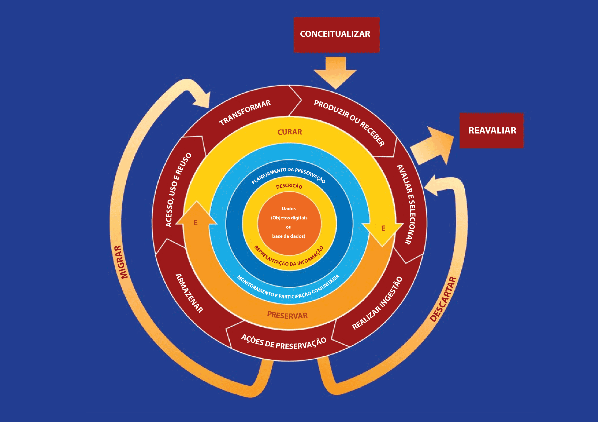

Módulo 4 . Aula 2
Gestão de dados: conceitos e principais ferramentas
Módulo 4 . Aula 2
Gestão de dados: conceitos e principais ferramentas
 Objetivos da
aula
Objetivos da
aula
Nesta aula você será apresentado à atividade de gestão de dados com foco na atividade de pesquisa. Ao final desta aula você será capaz de:
- Compreender que a gestão de dados é uma mudança cultural importante para a comunidade científica.
- Identificar argumentos favoráveis, ou benefícios esperados, da gestão de dados no campo científico.
- Identificar as etapas do ciclo de vida dos dados e compreender as ações que são realizadas em cada uma delas.
- Compreender a importância da documentação para a gestão de dados e seu potencial de reúso.
Gestão de dados como atividade estruturada
Geralmente, os projetos de pesquisa coletam e produzem dados cuja temporalidade é maior do que o período de financiamento e execução. Infelizmente, não é incomum que, passado algum tempo, pesquisadores que tanto trabalharam para coletar ou produzir dados tenham dificuldade de encontrá-los e reutilizá-los. Isso porque, em várias áreas de pesquisa, a gestão de dados não é uma atividade tão estruturada ao ponto de garantir sua preservação em longo prazo.
Ainda que o volume de dados perdidos em instituições de pesquisa seja desconhecido, um estudo de Gibney e Noorden (2013) sobre a disponibilidade dos dados que subsidiam artigos científicos em um campo bastante específico (morfologia de plantas ou animais) nos dá indícios do montante desperdiçado. Ao analisarem 516 artigos, os autores identificaram que, passados 20 anos:
- 80% dos dados não estão mais disponíveis
- As chances de que um conjunto de dados que subsidia artigos continue acessível diminuem 17% ao ano.
Esse desafio é especialmente importante em relação aos dados que já nascem digitais, cuja preservação em longo prazo convive com riscos iminentes por conta da fragilidade das mídias digitais e da obsolescência tecnológica de máquinas, softwares e formatos proprietários. Essas características podem tornar os dados inacessíveis e/ou ininteligíveis em futuros dispositivos.
Para compreender o tamanho dessa ameaça, basta refletir sobre os inúmeros arquivos armazenados em mídias pessoais como disquetes, pen drives e CDs que você perdeu nos últimos anos devido ao desgaste dos suportes ou por não ter mais um software capaz de lê-los.
No caso de instituições, multiplique essa perda pelo número de profissionais, bolsistas e estagiários que produzem e coletam dados sem realizar uma “gestão ativa”.
Percebeu o tamanho do problema?
Veja a seguir os oito argumentos favoráveis à gestão de dados para pesquisa:
pan_tool_alt CliqueToque e arraste para passar os cartões
Ciclo de vida de dados
Atualmente, os investimentos para implementar a gestão ativa de dados priorizam as pesquisas da cauda longa, cujos dados não são cuidadosamente indexados e armazenados e que correm maior risco de se tornarem inacessíveis e subutilizados. Essa atividade começa no planejamento da coleta e/ou geração de dados, passando por processos de limpeza, curadoria, indexação e registro das transformações até seu armazenamento e preservação em longo prazo.
O Digital Curation Center (DCC), do Reino Unido, representa graficamente o ciclo de vida dos dados, elencando as ações necessárias para sua gestão ativa.

Decrição da imagem: Infográfico circular colorido sobre um fundo azul-escuro, detalhando as etapas do Ciclo de Vida da Curadoria Digital, a estrutura é composta por seis anéis concêntricos e setas externas que indicam o fluxo de dados. Elementos Externos de Entrada/Saída, começando por conceitualizar com uma seta que aponta para baixo, na direção de “produzir ou receber” e por reavaliar à direita com uma seta saindo do ciclo, da direção de “avaliar e selecionar”. Duas grandes setas curvas contornam a base do círculo, elas saem de “ações de preservação”, à esquerda, a seta migrar sobe em direção a “transformar” e à direita, a seta Descartar aponta em direção a “avaliar e selecionar”. O Ciclo de Ações Sequenciais é o anel mais externo, e é formado por sete setas segmentadas no sentido horário, as etapas são: Produzir ou Receber; Avaliar e Selecionar; Realizar Ingestão; Ações de Preservação; Armazenar; Acesso, Uso e Reuso e Transformar. O próximo anel interno são Ações Ocasionais e Contínuas, com duas setas curvas largas com as palavras Curar no topo e Preservar na base, nas pontas dessas setas, está escrito a letra "E", simbolizando "Exceções" ou interações externas. O próximo anel interno está escrito Monitoramento e participação comunitária. O seguinte está escrito Planejamento da preservação. O próximo, na parte de cima está escrito “descrição” e, abaixo, “Representação da informação”. Por último no centro está escrito: Dados (objetos digitais ou base de dados).
Conceituar a coleta de dados, incluindo os métodos de captura e as opções de armazenamento. Algumas dicas:
- Adote a ideia de que curadoria de dados é uma boa prática de pesquisa.
- Conheça as expectativas dos financiadores e avalie a sua capacidade de atendê-las.
- Determine e documente, logo no início do projeto, os direitos de propriedade intelectual.
- Identifique questões referentes à publicação de dados, tais como embargos e restrições.
- Identifique e documente funções e responsabilidades das pessoas envolvidas.
- Crie dados e seus respectivos metadados administrativos, descritivos, estruturais e técnicos. Se receber dados de terceiros, faça de acordo com políticas de coleta, de criadores de dados, outros arquivos, repositórios ou centros de dados. Se necessário, atribua metadados apropriados.
- Defina para quem você está coletando dados e o que as pessoas podem fazer (ou não) com eles.
- Identifique requisitos de proteção de dados a serem adotados durante a pesquisa.
- Adote, logo no princípio da pesquisa, padrões de conteúdo, sintaxe e estrutura.
- Promova treinamentos para equipes, se necessário.
- Identifique métricas de qualidade dos dados e monitore-as.
- Trabalhe em conjunto com outros pesquisadores e profissionais da informação.
- Avalie os dados e selecione aqueles que passarão por curadoria e preservação em longo prazo. Siga orientações, políticas ou requisitos legais.
- Avalie e identifique os conjuntos de dados considerados valiosos.
- Identifique quais dados serão necessários manter para apoiar suas descobertas no futuro.
- Defina para quem você está mantendo os dados e o que poderá ser feito com eles no futuro.
- Defina quais dados podem ser descartados, garantindo conformidade com requisitos legais.
- Garanta que os dados atendam às métricas mínimas de qualidade. Se necessário, os reavalie antes de depositá-los em repositórios.
- Articule-se com pesquisadores e gestores de informação para implementar fluxos de trabalho e políticas.
- Avalie os dados de acordo com o momento atual, mas pense no futuro.
- Transfira os dados para arquivos, repositórios, centro de dados ou outros espaços de custódia, aderindo a guias, políticas e requerimentos legais.
- Utilize padrões de arquivamento para descrever dados hierárquicos.
- Conheça políticas de repositório que podem afetar o depósito em longo prazo.
- Torne o processo o mais direto e automático possível.
- Defina um responsável pela garantia de qualidade dos dados antes do depósito (Lembre-se de que a qualidade dos dados não é absoluta e deve ser avaliada frente ao seu objetivo. Dados de "alta qualidade" para um grupo pode ser inadequado para outros.)
- Obtenha uma notificação formal, quando possível, da transferência de dados.
- Realize ações de preservação para garantir que os dados permaneçam autênticos, confiáveis, íntegros e utilizáveis.
- Defina o que as pessoas poderão fazer com eles.
- Identifique e comunique sobre as propriedades significativas dos dados, visando sua preservação.
- Seja crítico ao analisar as melhores práticas e abordagens recomendadas. Elas podem funcionar em cenários específicos, mas não para a sua pesquisa.
- Documente ações de preservação para que outros saibam o que foi feito com os dados ao longo do tempo.
- Armazene os dados de maneira segura, seguindo padrões relevantes.
- Garanta que os dados estejam acessíveis para usuários designados por você ou outros potenciais reutilizadores, registrando informação sobre eles e, quando necessário, aplicando controles e procedimentos de autenticação.
- Determine o que os usuários podem fazer com os dados e por quanto tempo.
- Identifique e comunique as propriedades significativas dos dados.
- Garanta que restrições de acesso e uso sejam comunicadas e respeitadas.
- Forneça informações de contexto suficientes para que os dados sejam localizados e usados.
- Crie dados a partir do original e da migração para diferentes formatos, criação de subconjuntos, seleção ou query, criação de novos resultados derivados.
Algumas ações ocasionais ajudam a manter os dados organizados e seguros. Entenda a seguir.
pan_tool_alt Clique Toque nas imagens para visualizar as informações.
Vejamos a seguir alguns exemplos de boas práticas em gestão de dados.
Um Plano de Gestão de Dados (PGD) é um documento que ajuda os pesquisadores a estruturarem como os dados serão coletados, documentados, geridos e preservados. Seus benefícios incluem:
- Reduzir retrabalho: promove o uso eficiente de dados durante e após o projeto de pesquisa.
- Facilitar o reúso: permite que outros pesquisadores entendam e utilizem os dados de forma adequada.
- Garantir a citação correta: assegura que o crédito seja dado ao autor original dos dados.
Diversas instituições ao redor do mundo têm desenvolvido ferramentas específicas para auxiliar os pesquisadores na elaboração de PGDs, inclusive a Fiocruz. Algumas iniciativas relevantes são:
Para saber mais sobre PGDs e o FioDMP, acesse a aula “Planos de Gestão de Dados (PGD)” (Este link abrirá em uma nova aba) deste módulo.
Os Princípios FAIR foram elaborados por um grupo de especialistas em uma reunião em Leiden (Holanda), no ano de 2014, como um conjunto de atributos desejáveis para garantir a boa gestão de dados. A ideia é garantir que os dados sejam:
- Findable (localizáveis): devem ser facilmente encontrados, utilizando-se metadados robustos e identificadores persistentes como DOIs.
- Accessible (acessíveis): os dados devem estar disponíveis para acesso, mesmo que autorizações sejam necessárias.
- Interoperable (interoperáveis): compatíveis com diferentes sistemas para facilitar a integração.
- Reusable (reutilizáveis): bem documentados e licenciados de forma que possam ser reutilizados em novos contextos.
Aprofundaremos os Princípios FAIR, na aula 5 (Este link abrirá em uma nova aba) deste módulo.
Os repositórios de dados são infraestruturas essenciais para armazenamento, preservação e compartilhamento de dados científicos. Eles possibilitam que os conjuntos de dados sejam acessíveis, reutilizáveis e interoperáveis, promovendo transparência e replicabilidade à pesquisa.
Assim como o Acesso Aberto impulsionou a criação de repositórios institucionais e temáticos para a literatura científica, o movimento de Dados Abertos tem incentivado a estruturação de repositórios específicos. Entretanto, é fundamental compreender que dados científicos e literatura científica são objetos distintos, cada um representando desafios próprios para armazenamento, acesso e compartilhamento. A principal distinção entre repositório de produção científica e repositórios de dados está no tipo de objeto armazenado e nas necessidades associadas às questões éticas e jurídicas, além de estratégias para sua preservação e reutilização.
Diferença entre repositórios de literatura científica e repositórios de dados
Enquanto repositórios de artigos científicos armazenam publicações formatadas, os repositórios de dados lidam com datasets brutos ou processados, frequentemente organizados em diferentes formatos. Além disso, os dados precisam ser acompanhados de metadados ricos, garantindo que sejam compreendidos, citáveis e reutilizáveis por outros pesquisadores.
A criação e a manutenção de repositórios de dados também enfrentam desafios específicos, como necessidade de estratégias de preservação de longo prazo, padronização para garantir a interoperabilidade e definição de diretrizes claras para o licenciamento e compartilhamento dos dados, respeitando questões éticas e legais, como a proteção de dados sensíveis.
| Característica | Repositórios de Produção Científica | Repositórios de Dados |
|---|---|---|
| Objeto armazenado | Artigos científicos revisados por pares, teses, relatórios técnicos. | Dados brutos ou processados, conjuntos de dados em diversos formatos. |
| Formato dos arquivos | PDF, Word, LaTeX. | CSV, JSON, RDF, NetCDF etc. |
| Finalidade | Disponibilizar o texto completo das publicações científicas. | Tornar os dados de pesquisa acessíveis, reutilizáveis e interoperáveis. |
| Metadados | Informações bibliográficas (autor, título, resumo, palavras-chave). | Descrição dos dados, metodologia, formato, licença, DOI e links para artigos associados. |
| Exemplos | SciELO, ArXiv, repositórios institucionais universitários. | Arca Dados, Redape, Zenodo, Figshare, GenBank, PANGAEA. |
Para garantir a preservação e a reutilização futura, os dados devem ser depositados em repositórios confiáveis. Há inúmeros tipos de repositórios, como temático, generalista/multidisciplinar, institucional, entre outros. Observe as característica e exemplos de cada um deles a seguir.
| Tipo de repositório | Características | Exemplos |
|---|---|---|
| Temático | Repositórios voltados para áreas específicas do conhecimento, reunindo dados de pesquisa, artigos e outros materiais de determinada disciplina. Normalmente, seguem padrões de metadados e normas específicas da comunidade científica relacionada. |
PANGAEA: repositório de dados de Ciências da Terra e Ambientais, amplamente utilizado para o compartilhamento de informações climáticas, oceanográficas e geológicas.
GenBank: base de dados pública de sequências genéticas mantida pelo National Center for Biotechnology Information (NCBI), referência na área de Biologia Molecular. |
| Generalista ou multidisciplinar | Repositórios que aceitam dados de pesquisa de diversas áreas do conhecimento, permitindo o depósito de diferentes tipos de arquivos, como datasets, artigos, apresentações e softwares. São ideais para pesquisadores que não possuem um repositório institucional ou temático adequado para armazenar seus dados. |
Zenodo: repositório multidisciplinar desenvolvido pela Organização Europeia para a Investigação Nuclear (CERN) como uma infraestrutura para cientistas, projetos de pesquisa e instituições que não dispõem de um repositório institucional para compartilhar resultados de pesquisa. A plataforma também permite o depósito de data papers e outros materiais de pesquisa. Figshare: outra plataforma que permite o depósito de dados e apoia a publicação de data papers e citação de dados. |
| Institucional | Repositórios mantidos por universidades, centros de pesquisa ou instituições governamentais para armazenar e disseminar a produção científica e os dados de pesquisa de seus pesquisadores. Têm o objetivo de preservar a memória científica da instituição e garantir o acesso aberto aos seus resultados. | Arca Dados: repositório oficial de dados de pesquisa da Fiocruz, cuja missão é “arquivar, publicar, disseminar, preservar e compartilhar os dados digitais para pesquisa produzidos pela comunidade Fiocruz e/ou em parceria com outros institutos ou órgãos de pesquisa”. Certificado pelo selo CoreTrust Seal como repositório confiável. |
Os repositórios Zenodo e Figshare são amplamente utilizados e recomendados pela comunidade internacional para o compartilhamento de dados, sendo reconhecidos por promoverem boas práticas de disseminação e citação de dados. No entanto, vale destacar que eles não possuem certificações de confiabilidade, como o CoreTrustSeal. Já a Fiocruz conta com o seu repositório institucional, o Arca Dados (Fiocruz), que possui essa certificação internacional, garantindo conformidade com padrões internacionais de preservação e gestão de dados científicos.
Para acessar uma lista mais completa de repositórios, acesse a aula “Requisitos de financiadores e revistas científicas, plataformas e repositórios de dados, e data papers” (Este link abrirá em uma nova aba).
A importância da documentação
Outro fator que pode comprometer o valor informacional dos dados é a escassez de documentação sobre como eles foram produzidos e/ou coletados e a quais tratamentos foram submetidos ao longo de seu ciclo de vida. Sua ausência pode torná-los incompreensíveis no futuro mais próximo do que imaginamos.
O desafio das instituições não é apenas preservar os conjuntos de dados em si, mas, sobretudo, manter a capacidade de transmitir informação necessária para seu reúso efetivo no futuro. Trata-se de uma dificuldade comum, que diversas instituições enfrentam, seja pelo próprio grupo de pesquisa, que conta com registros completos de suas atividades, seja por terceiros que podem acessá-los e reutilizá-los em novos contextos e análises,
Na prática, a documentação de dados deve contemplar a atribuição de metadados, que são dados sobre os dados que informam sua origem, formato e estrutura. Além disso, a documentação deve disponibilizar descrições sobre a metodologia de coleta, processamento dos dados e dicionários de dados que detalham os campos e variáveis contidos em seus conjuntos. Esse tipo de atividade não é mera burocracia, uma vez que ela é fundamental para garantir que os dados sejam compreendidos e utilizados de maneira eficaz, transparente e reprodutível no futuro.
Como citar esta aula:
JORGE, Vanessa; CLINIO, Anne. Gestão de dados: conceito e principais ferramentas. In: JORGE, Vanessa; CLINIO, Anne (coord.). Programa de Formação Modular em Ciência Aberta. Módulo, 4. Gestão, compartilhamento e abertura de dados. Rio de Janeiro: Fiocruz, 2025. Aula 2 (2a edição). Disponível em: https://mooc.campusvirtual.fiocruz.br/rea/ciencia-aberta/modulo4/aula2.html. Acesso em: 14 fev. 2025.